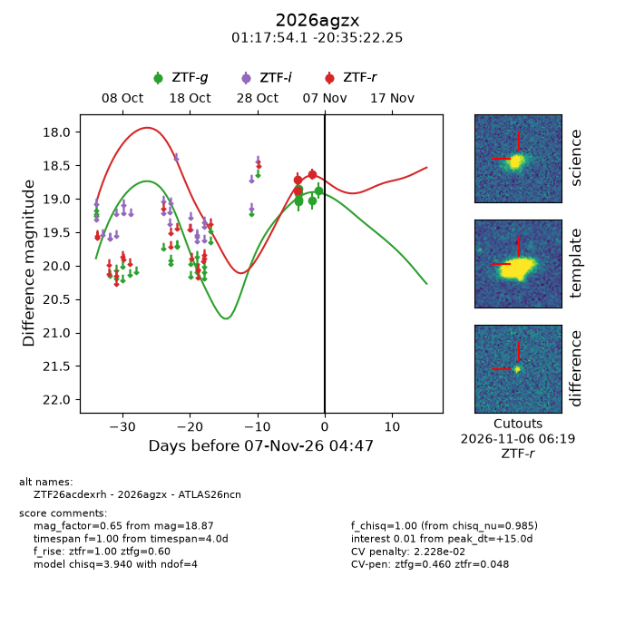
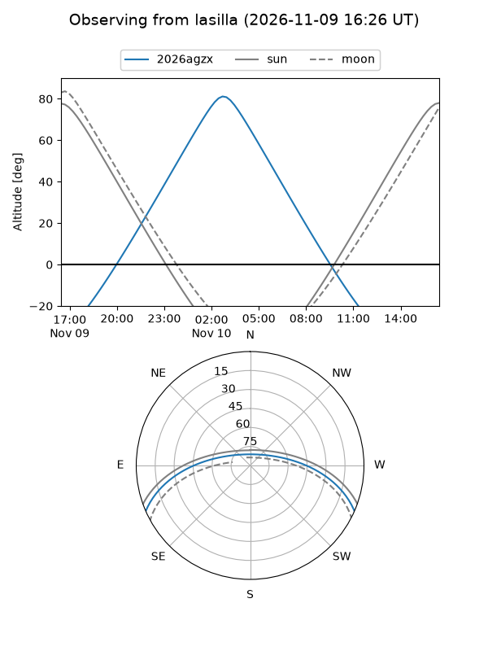
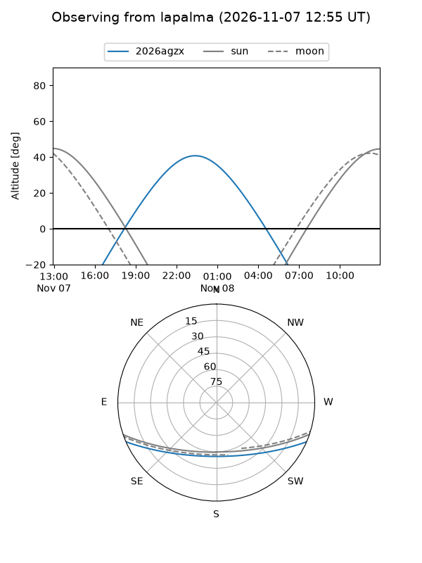
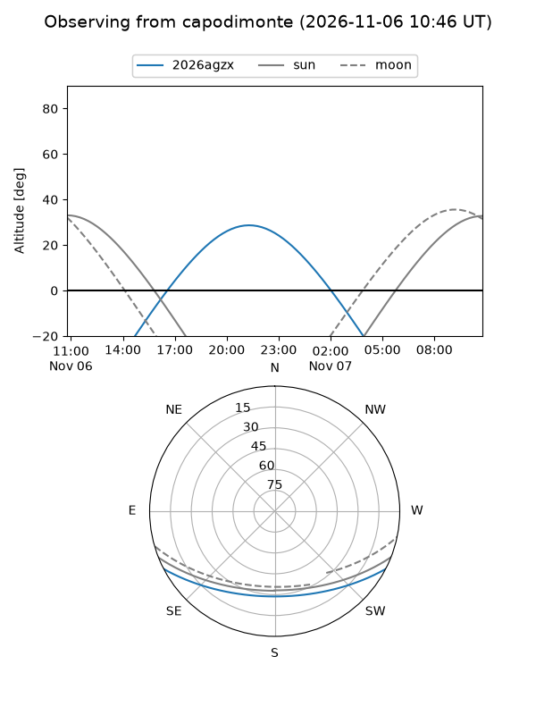
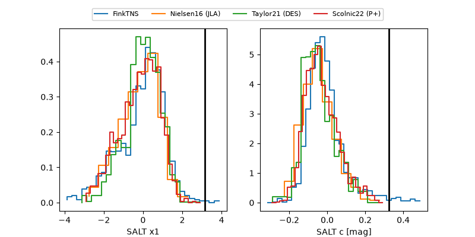

2026agzx
Target 2026agzx at 2026-11-07 04:49
Aliases and brokers:
FINK-ZTF: ztf.fink-portal.org/ZTF26acdexrh
Lasair-ZTF: lasair-ztf.lsst.ac.uk/objects/ZTF26acdexrh
ALeRCE-ZTF: alerce.online/object/ZTF26acdexrh
YSE-PZ: ziggy.ucolick.org/yse/transient_detail/2026agzx
TNS name: wis-tns.org/object/2026agzx
Direct TNS query: direct search
alt names
ZTF26acdexrh (ztf,fink_ztf)
2026agzx (tns,yse)
ATLAS26ncn (atlas)
Coordinates:
equatorial (ra, dec) = 19.4754,-20.58951
equatorial (HMS+DMS) = 01:17:54.09,-20:35:22.25
galactic (l, b) = (167.0999,-81.09526)
Flags:
likely cv: !!
CV pen: 0.02227948031933014
peak dt: +15.0
Photometry:
last ztfg=18.87, ztfr=18.63
6 ztfg, 3 ztfr detections
Lightcurve

Visibility



Additional plots
